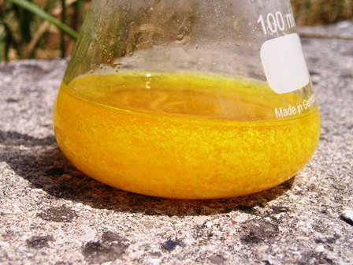
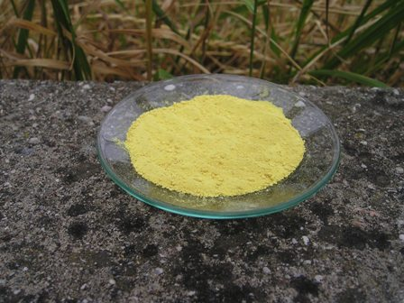
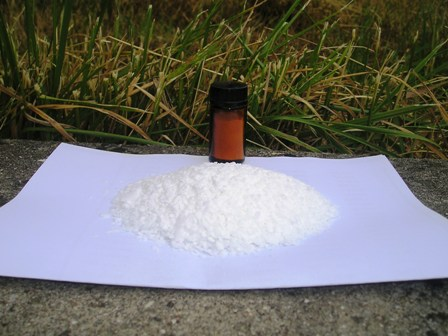

Eccoci giunti in vista del traguardo; se siamo arrivati fin qui abbiamo buone probabilità di vedere la bellissima luminescenza azzurra di questa sostanza!
Una volta in possesso del 5-nitro-2,3-diidro-1,4-ftalazinadione (ved. sintesi nella Fase 2) occorre ridurre il gruppo nitrico -NO2 di questo a gruppo amminico -NH2, con la procedura seguente:
 - in una beuta da 100 ml porre 3,2 g di 5-nitro-2,3-diidro-1,4-ftalazinadione, 20 ml di acqua e 10 ml ammoniaca al 25%.
- in una beuta da 100 ml porre 3,2 g di 5-nitro-2,3-diidro-1,4-ftalazinadione, 20 ml di acqua e 10 ml ammoniaca al 25%.
Mescolare fino ad avere una soluzione limpida rosso-arancio (eventualmente scaldare leggermente e aggiungere un po' di ammoniaca); porre su agitatore ed aggiungere gradualmente un totale di 8,4 g di sodio idrosolfito Na2S2O4.2H2O (da non confondere con l'iposolfito!).
La soluzione si riscalda. Dopo che la reazione si è calmata spontaneamente, bollire leggermente per qualche minuto e filtrare velocemente a caldo.
Riscaldare ulteriormente il filtrato per una mezzoretta, appena sotto ebollizione. In questa fase comincia a separarsi il 5-amino-2,3-diidro-1,4-ftalazinadione, ovvero il luminol, che si presenta come un precipitato flocculento di colore giallo.

Acidificare la soluzione calda con acido acetico e lasciare in riposo una notte.
(Notare che la sintesi del luminol è lunghissima anche perchè ogni fase presuppone il riposo di una notte per le precipitazioni/cristallizzazioni.
Questi "riposi" non sono però tempo perso e sono indispensabili per una buona resa).
Filtrare il precipitato, lavare con acqua fredda e seccare in aria o in forno sotto i 100° -
La resa è circa 2,5 g -
Il 5-amino-2,3-diidro-1,4-ftalazinadione si presenta come una polvere microcristallina gialla ed è sufficientemente puro per gli usi che ne vorremo fare; si potrebbe purificare ulteriormente perdendone un po' ma non lo ritengo necessario per gli scopi essenzialmente "ludici" che mi sono prefisso.

La foto sotto mostra "la partenza" e "l'arrivo", ovvero i 50 g di anidride ftalica che hanno generato i 5 g di luminol, ottenuti dopo una bella sudata!
(Mi è rimasta anche in sovracconto una piccola riserva di prezioso acido 5-nitroftalico).

Nella quarta e ultima fase vedremo se questa intrigante sostanza avrà mantenuto le promesse per cui è stata laboriosamente sintetizzata.